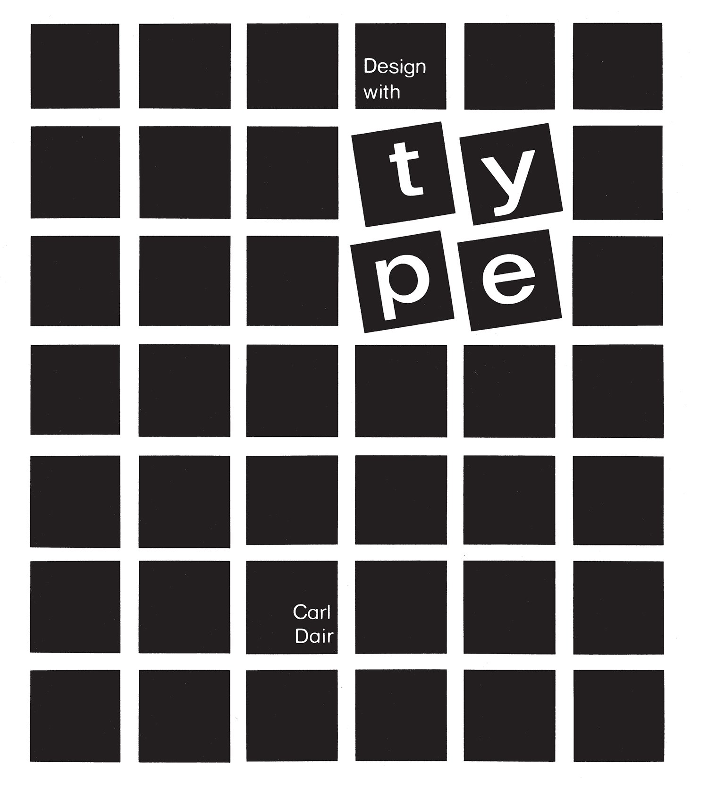

Seven Principles of Typographic Contrast
In a seminal booklet that he both designed and wrote, Carl Dair showed how in typography, as in music, harmony and contrast are the keys to composition.
/https://www.thestar.com/content/dam/thestar/news/insight/2015/09/27/carl-dair-the-man-who-gave-canada-its-own-typeface/dair-high-res.jpg)
Written by John D. Berry
The late Canadian typographer Carl Dair was one of the great typographic designers of the 1950s and 1960s, and he may have been the best of them all at explaining the nature of typography. In coordinated projects that he both wrote and designed, he managed to describe—and show—the ways in which manipulating and using type make typography happen.
Dair is the very epitome of what I mean when I say “typographer”: someone who designs with type, not just a fancy typesetter, but someone who uses type, in all its variations, as the principle element of design. Since type carries meaning, the practice of typography requires a designer who cares about the words themselves. It requires someone who cares enough, and is skillful enough, to make the type express that meaning, rather than serve as simply eye-catching decoration.
Carl Dair’s book Design With Type (originally published in 1952; revised and expanded in 1967) is deservedly still in print, even though the technology that he used and described has long been outdated. The practicalities of setting type in metal are no longer the practicalities we have to deal with; but the visual relationships between letters, which Dair showed and explained so graphically in his book, haven’t changed at all. Design With Type is still one of the best handbooks available for learning how to do exactly what the title says: design with type.
At around the same time he was revising his book, Carl Dair was producing a series of six pamphlets for West Virginia Pulp and Paper (Westvaco), which he called “A Typographic Quest.” Each booklet was, naturally, printed on Westvaco paper stock; like the lavish paper-company samples produced today, this series was meant to raise the profile of the manufacturer and encourage designers to think of Westvaco when specifying paper for their printing jobs. But these were quite modest productions: little saddlestitched booklets of about 30 pages, measuring 5-1/4 inches by 9, usually printed in two colors (the first one uses three colors throughout; the later ones are two-color, although the second color may change from sheet to sheet, with all three colors used together on the covers). The first “A Typographic Quest” was published in 1964; the sixth (and, as far as I know, final) came out in 1968, the year Carl Dair died. Since he was both writer and designer for the series, each of the booklets emerged as a wholly crafted object, dedicated to explaining one or another aspect of using type.
Harmony and Contrast
The heart of Carl Dair’s teaching—the thing that I keep pointing people to, and the most valuable thing I myself learned from his work—is the subject of “A Typographic Quest” No. 5: “Typographic Contrast.” In a virtuoso performance, Dair shows exactly how designers use different kinds of visual contrast to make design work and meaning pop out—clearly and unambiguously, and with flair. To make his point, he compares typography to music.
Graphic form and musical form have a common denominator: rhythm and emphasis, harmony and contrast. Harmony and contrast,
says Dair, are fundamental to both, and the discovery of these basic principles and their application to the design of printed matter is the object of this volume of ‘A Typographic Quest.’
Seven Kinds of Contrast
Dair first explains the “elements of harmony” (a consistent relationship between the black strokes of the letters on a page and the space around them; and any rules, frames, or decorations being similar in style to the type), then goes on to show seven different kinds of contrast. He emphasizes that in any kind of differentiation, it’s important to make the contrast obvious—not just a slight change, an almost imperceptible variation, but a really big, obvious difference between the contrasting elements.
- Contrast of Size
- Contrast of Weight
- Contrast of Form
- Contrast of Structure
- Contrast of Texture
- Contrast of Color
- Contrast of Direction
- Other Types of Contrast
Contrast of Size
The first and most basic contrast is size. A simple but dramatic contrast of size,
says Dair, provides a point to which the reader’s attention is drawn. Set in the same style of type, it maintains the exact relationship of the letter to the background. It is only a physical enlargement of the basic pattern created by the form and the weight of the type being used for the text.
The most common use of size is in making the title or heading noticeably bigger than the text—but that’s only a starting-point.
Contrast of Weight
The second most obvious contrast is of weight: bold type stands out in the middle of lighter type of the same style. As Dair points out, Not only types of varying weight, but other typographic material such as rules, spots, squares, etc., can be called into service to provide a heavy area for a powerful point of visual attraction or emphasis.
The next two kinds of contrast are the contrast of form and the contrast of structure. It’s not entirely obvious where to draw a line between these two, since they both have to do with the shapes of the letters.
Contrast of Form
By “form,” Dair means the distinction between a capital letter and its lowercase equivalent, or a roman letter and its italic variant. He includes condensed and expanded versions under “form,” and he even allows as how there are some script types which harmonize with standard types, such as the Bank Script and Bodoni on the opposite page, and can be used for dramatic change of form.
(He warns, parenthetically, against using scripts and italics together, since they are both versions of handwritten letters; they’re more likely to conflict than to contrast.)
Contrast of Structure
By “structure,” Dair means the different letterforms of different kinds of typefaces—a monoline sans serif vs. a high-contrast modern, for instance, or an italic vs. a blackletter. “The use of contrast of structure may be compared to an orator who changes his voice not to increase or decrease the volume, but to change the very quality of his voice to suit his words.”
Contrast of Texture
Put all these things together, and apply them to a block of text on a page, and you come to the contrast of texture: the way the lines of type look as a mass, which depends partly on the letterforms themselves and partly on how they’re arranged. “Like threads in cloth,” says Dair, “types form the fabric of our daily communication.”
Contrast of Color
Dair’s sixth contrast is color—and he warns that a second color is usually less emphatic than plain black on white (or white on black), so it’s important to give careful thought to which element needs to be emphasized, and to pay attention to the tonal values of the colors used.
Contrast of Direction
The last of Dair’s seven kinds of contrast is the contrast of direction: the opposition between vertical and horizontal, and the angles in between. Turning one word on its side can have a dramatic effect on a layout. But Dair points out that text blocks also have their vertical or horizontal aspects, and mixing wide blocks of long lines with tall columns of short lines can also produce a contrast.
Other Types of Contrast
There are other kinds of contrast, less clearly dependent on the type itself. Dair mentions “contrast by isolation,” i.e., putting a word or phrase in an isolated position away from the other elements on the page, to make it stand out. (I think of this as a contrast of position.) And he suggests other kinds of non-typographic contrast, such as mixing paper stocks, embossing, and using contrasting matte or gloss inks. He also points out that illustrations, especially line art, may be in harmony with the type on the same page or may contrast with it completely.
Finally, Dair takes time to say a little about rhythm (“in typography, it consists of intervals of space”) and about the power of “interrupted rhythm” (“the impact derives not from the fact that the unexpected happens, but rather that the expected does not happen”).
Most of the time, we use more than one kind of contrast together, in order to make the differences between visual elements even more obvious. We can use all of Dair’s seven kinds of contrast at once, if we’re skillful; he refers to this as typographic “chords.” (One of the chapter titles in Design With Type is “Multiplying the Contrasts.”) But breaking them down like this into simple oppositions makes it easier to use them consciously; it keeps us from getting our layouts all muddied up through trying to change too many things at once without thinking about what we’re doing. I’ve found Carl Dair’s analysis of typographic contrast—and especially the visual flair with which he presents it—an invaluable tool in the practice of graphic design.